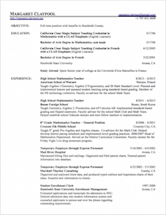
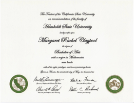
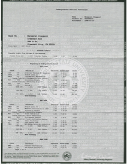
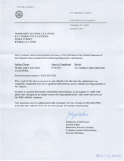

Who am I?
I'm a math teacher. This is my second year as the high school math teacher at Busan Foreign School in Busan, South Korea. Previously, I spent five years as a middle school math teacher in a rural northern California community.
What are my strengths?
Math: I'm passionate about mathematics. I love sharing with my students the beauty of its logic and the satisfaction that comes from solving a difficult puzzle, often with multiple routes to a correct answer.
Technology: I'm deeply excited about technology in education. On its own, technology cannot reinvent education. However, knowing how deeply these new tools have affected my own learning inspires me to try to share these possibilities with my students and with my colleagues. Some technologies that have transformed my teaching include document cameras, smart boards, graphing software, and Edmodo.
Learning: I love to learn new things and new skills and hope my love of learning will help inspire my students to become life-long learners. Professional development is my chance to find out what other teachers are doing and why. I've been gifted with everything from helpful tips and tricks to profound revelations that have transformed my teaching. I hope that I can share ideas with other teachers that they will find equally helpful.
Music and Theatre: I've been involved in music and theatre for many years, which has enriched both my life and my teaching practice. For example, my students enjoy it when I sing the Greek alphabet to them and they have all learned the Quadratic Formula song.
More Details
Please take a look at my resume, letters of recommendation, and other details. If you think I might be a good fit for your school, I'd love to discuss it with you.
|  |  |  |  | ||
| Resume | Letters of Reference | Diplomas and Teaching Certifications |
Official Transcript |
Background Check |
Email Me :) |